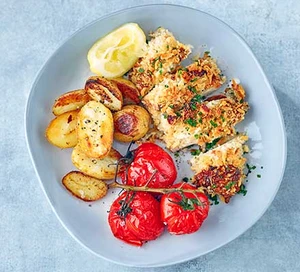

Crunchy Garlic Chicken

Description
Think chicken breasts are a bit boring? Try this garlic chicken that has the crunch and flavour of chicken kiev,
but with a fraction of the prep
Ingredients
4tbsp (about 40g) grated parmesan
5tbsp mayonnaise
1tbsp Nando's Garlic & Herb Flavour Shaker
50g panko breadcrumbs
2 boneless, skinless chicken breasts
lemon wedges, snipped chives and roasted potatoes and tomatoes to serve (optional)
- Heat oven to 200C/180C fan/gas 6. Make a production line of a board, two wide, shallow bowls or dishes, and
a baking tray that will comfortably fit the chicken, lined with baking parchment or oiled foil.
- In the first dish, mix the parmesan, mayo, and Nando's Garlic & Herb Flavour Shaker with a good pinch of
seasoning to form a paste. Tip the crumbs into the second dish and shake so they cover the base. Put the
chicken on the board and, if necessary, trim and discard any fat. Blot well with kitchen paper – this will
help the coating stick.
- Dip the first breast into the mayo mix and using a spoon, make sure it is coated all over. Pick it up by the
thinner end and place on the crumbs. Use a spoon to cover completely with crumbs and press them on gently
until covered all over. Pick up once again by the ‘tail’ and place on the prepared baking tray. Repeat with
the second breast, then discard any leftover mayo and crumbs.
- Bake for 25-30 mins or until golden and cooked through (check the centre of the chicken with the point of a
knife). Transfer to a board and slice into three or four thick slices, scatter over the chives and serve
with the lemon wedges, roasted potatoes and tomatoes, if you like.